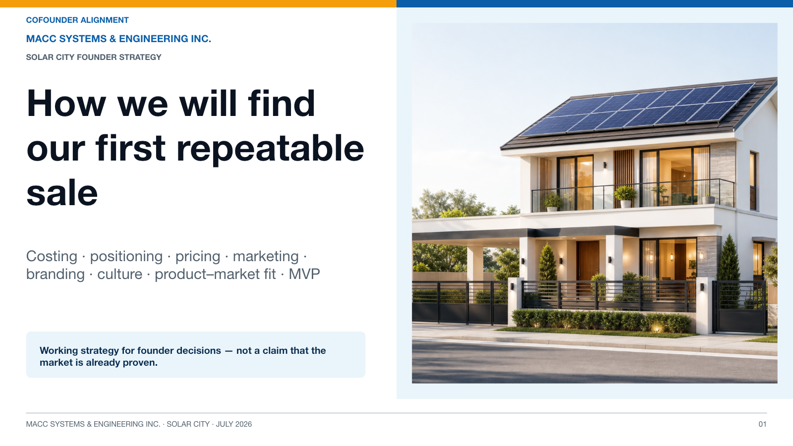
Slide 1: How we will find our first repeatable sale
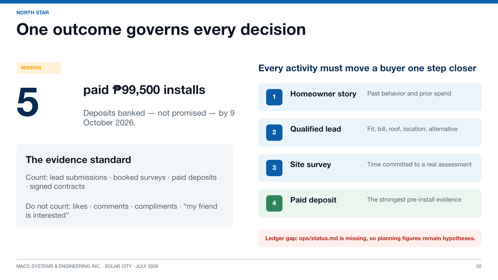
Slide 2: One outcome governs every decision
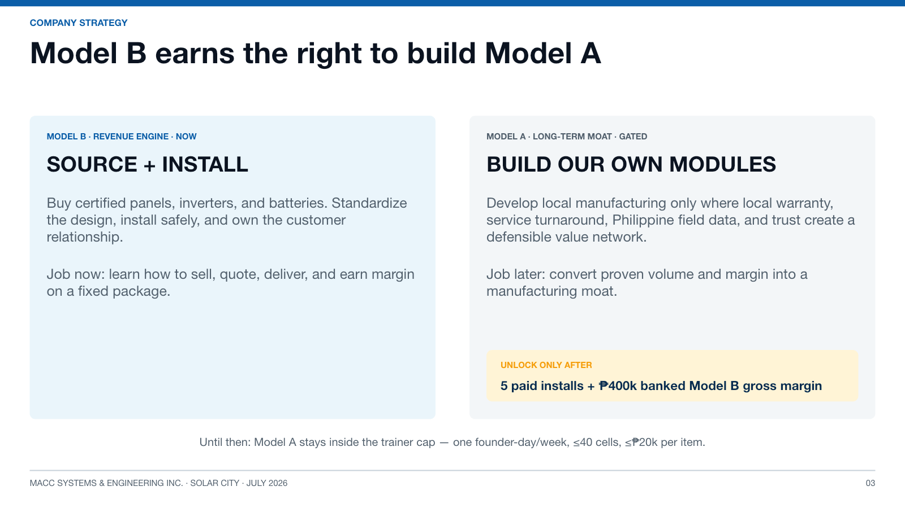
Slide 3: Model B earns the right to build Model A
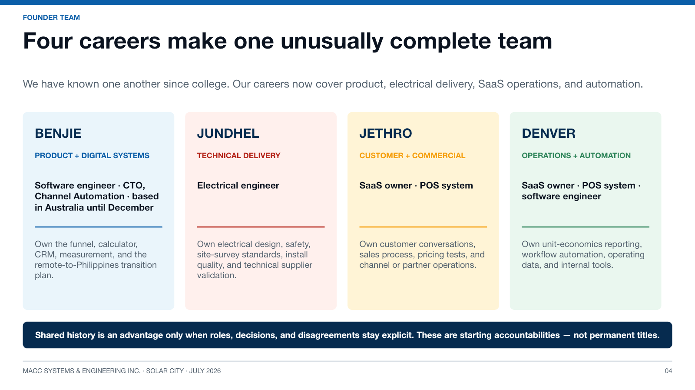
Slide 4: Four-founder team and starting accountabilities
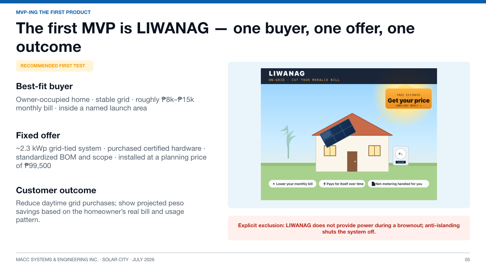
Slide 5: The first MVP is LIWANAG
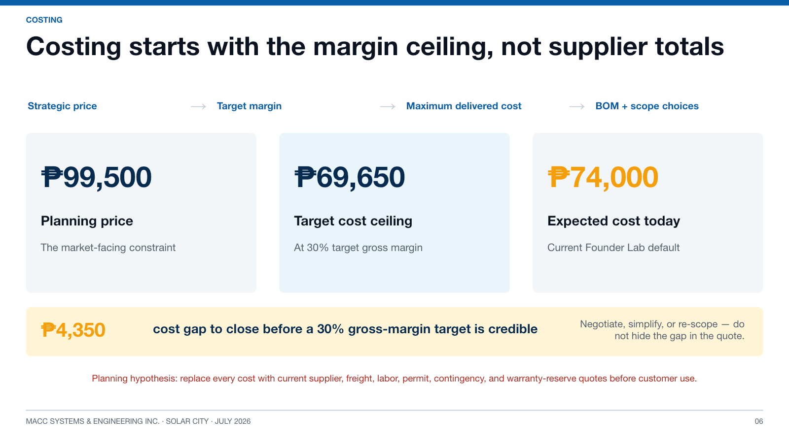
Slide 6: Costing strategy
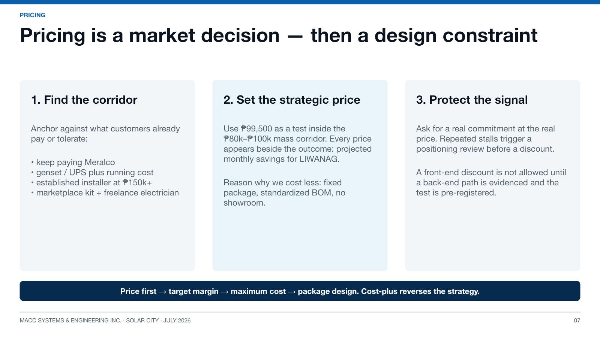
Slide 7: Pricing strategy
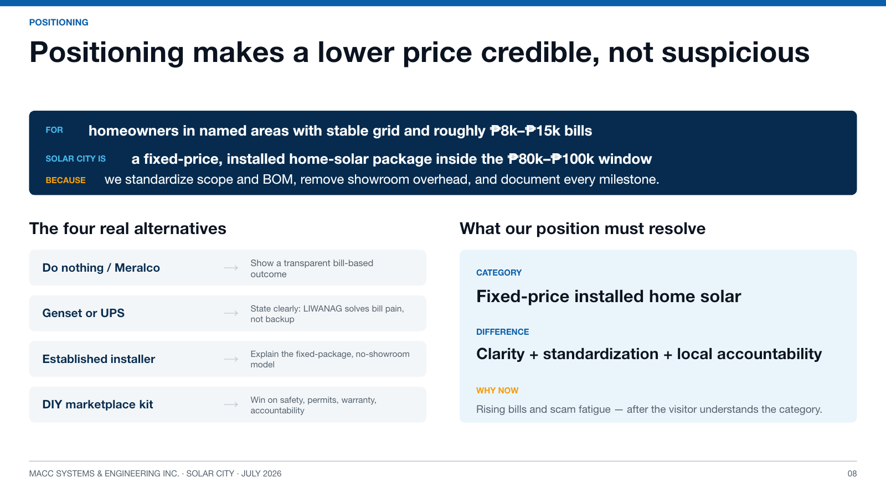
Slide 8: Positioning strategy
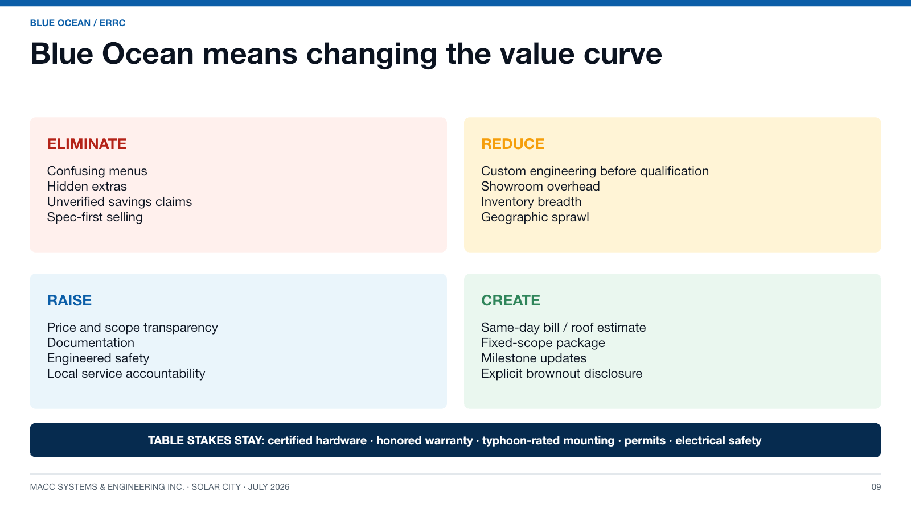
Slide 9: Blue Ocean ERRC grid
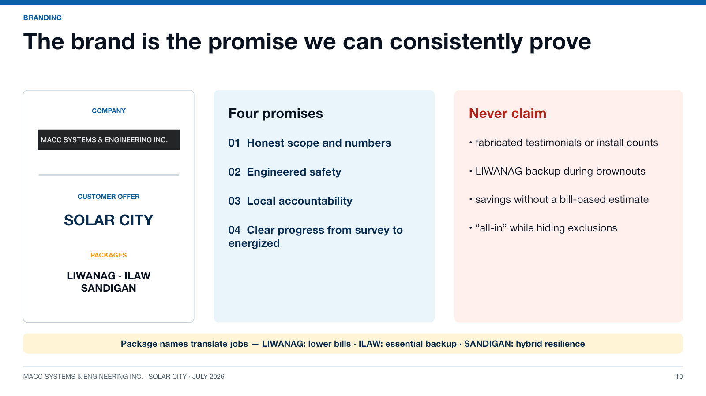
Slide 10: Brand hierarchy and promises
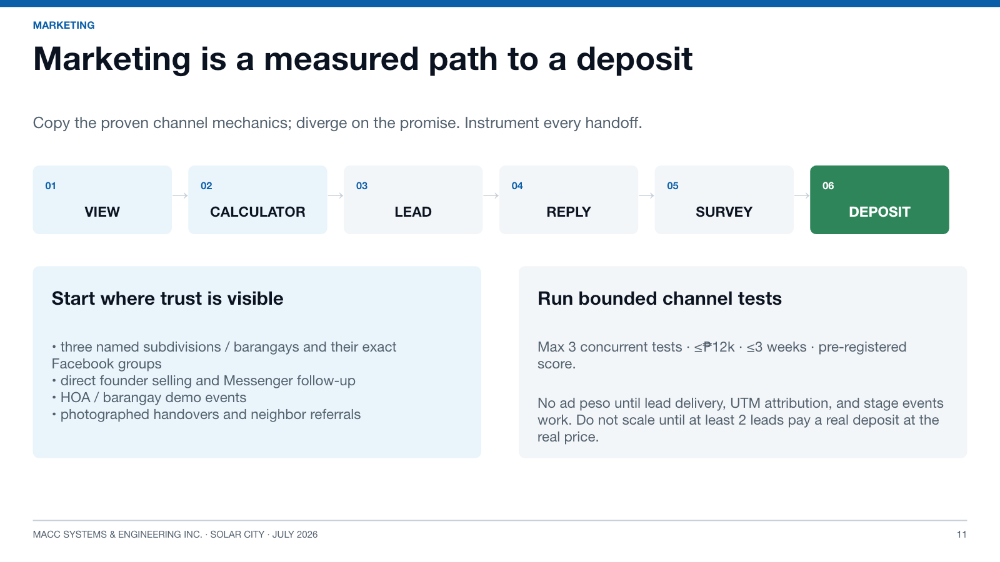
Slide 11: Marketing path to deposit
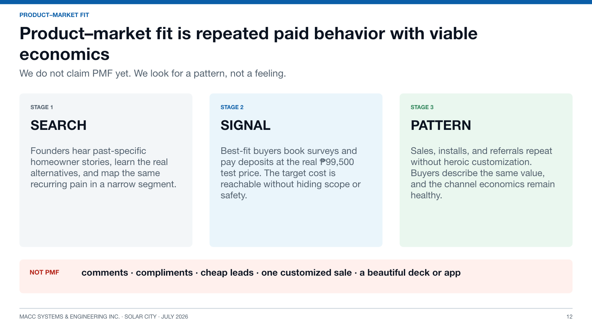
Slide 12: Product-market fit
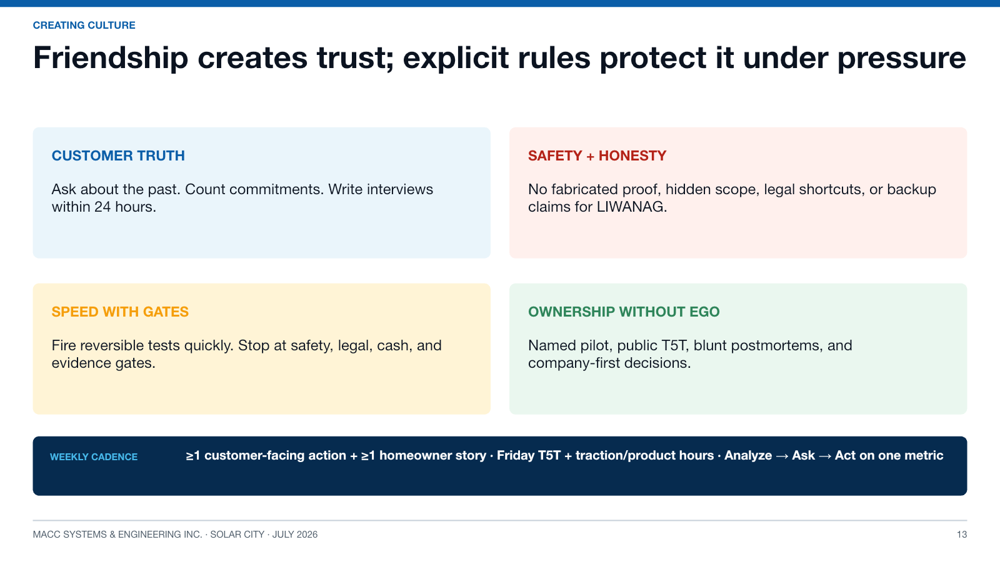
Slide 13: Founder culture
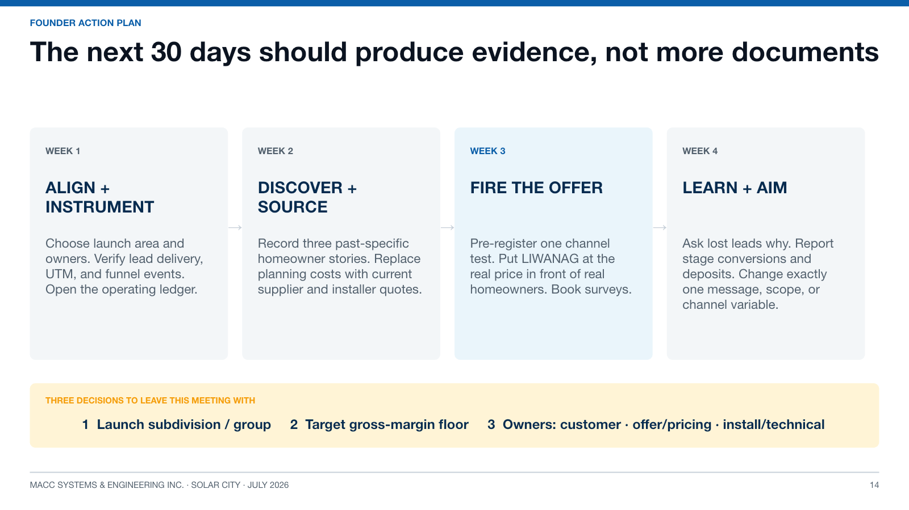
Slide 14: Thirty-day action plan
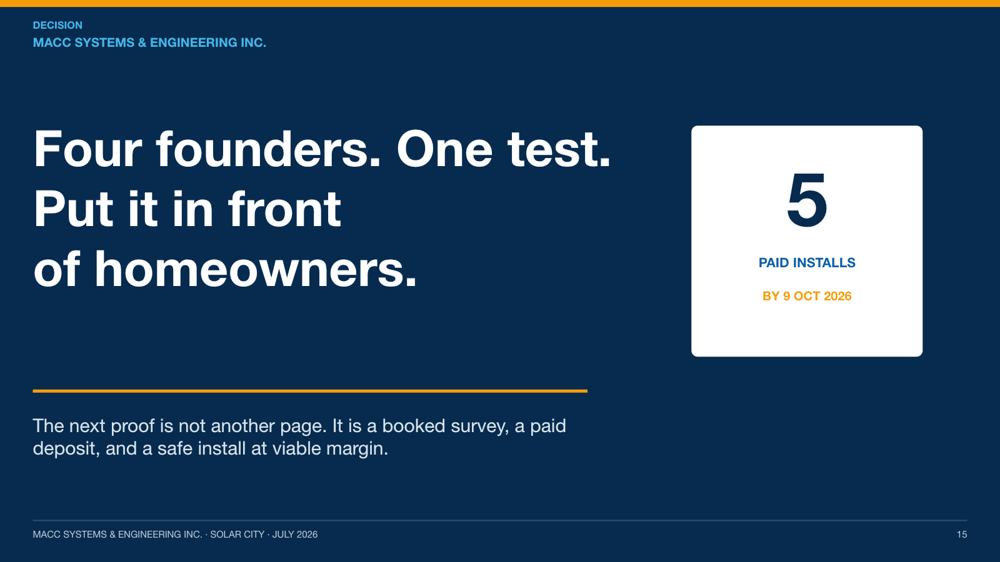
Slide 15: Four founders, one test
01 / 15